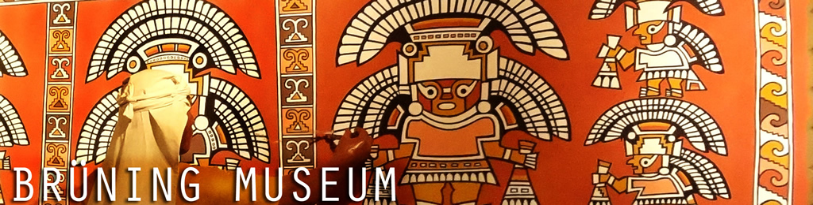
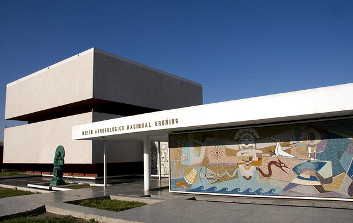
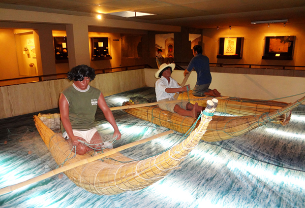
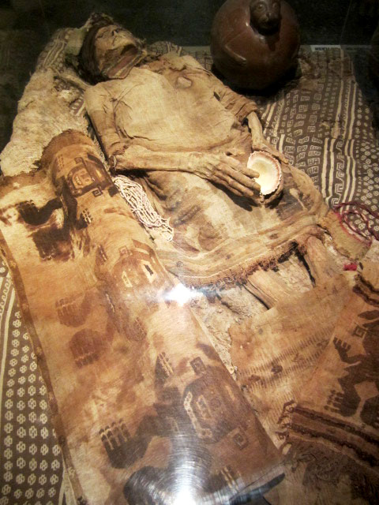
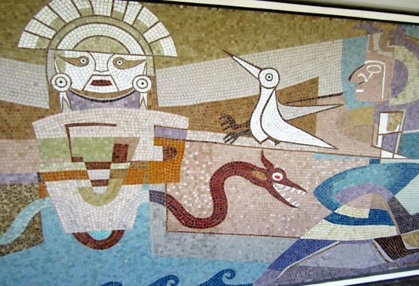

The Life Work of Germany’s Hans Brüning
The Brüning Museum was built in the 1960’s with the support of the German government as a memorial to the work and research of Hans Heinrich Brüning, a German who spent much of his adult life in Northern Peru. He learned about the Lambayeque culture and was accepted into their community as he became a prominent archaeologist.
Brüning’s enthusiasm for collecting antiques and artifacts led him to accumulate an impressive collection of ceramics, metallurgy, and other artisan crafts in his home. He soon converted his home into a museum, and later his artifacts were moved out of his home into a new museum. The current Brüning museum displays his life work and research, and contains several mummies, modern paintings, and other large displays. This museum is rare and very interesting, and documents the life work of a European archaeologist in Peru!


| Location |
| Located in the city of Lambayeque, about 7 miles (11 km) away from Chiclayo |
| Phone Number |
| (51)(074)-282110 or (074)-283440 |
| Address |
| Av. Huamachuco cdra. 8 s/n, Lambayeque – Perú |
| Email |
| museonacionalbruning@yahoo.es |
| Hours |
| Tuesday- Sunday, 9 AM- 5 PM |
| Price |
| Adults: 8 Soles
Students: 3 Soles
Children: 1 Sol |


| English/Spanish Tours |
| English and Spanish tours are available for 20 Soles (plus tip) |
| Time It Takes |
| Approximately 1.5 hours |
| Bathrooms |
| Yes |
| Gift Shop |
| Yes |
| Website |
| www.museobruning.com |
| Hours |
| Tuesday- Sunday, 9 AM- 5 PM |
| Price |
| Adults: 8 Soles
Students: 3 Soles
Children: 1 Sol |
Interesting Fact: This museum is home to a “gold room”that holds intricate and expertly-crafted ancient gold pieces.